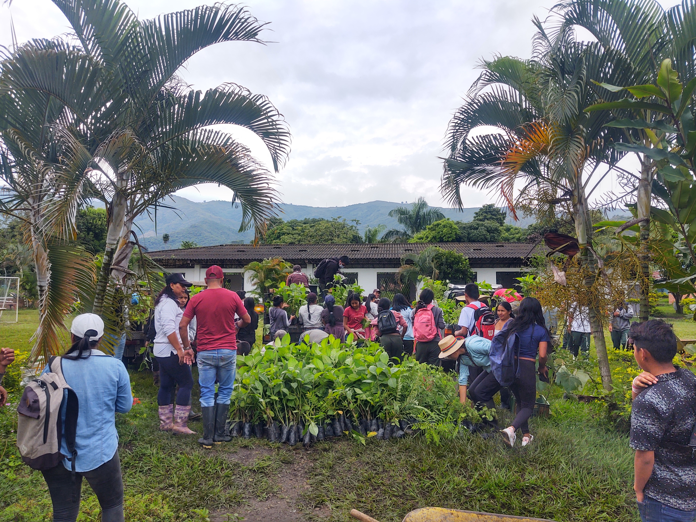

📸 Galería fotográfica



Vivero Escolar - I.E.B Dxi Phaden López Adentro - Sede Secundaria
Vereda El Pilamo
Caloto, Cauca
9 años
3.000 árboles
| Grupo | Cantidad |
|---|---|
| 👧 Niñas | 5 |
| 👦 Niños | 10 |
| 👩 Mujeres adultas | - |
| 👨 Hombres adultos | 1 |
| Total | 16 |
El vivero escolar Kwe’sx Fxtü Fxiw KbuÇxanxi Yaat surge como una estrategia educativa y ambiental orientada a la recuperación de semillas nativas, la reforestación de cuencas hídricas y la protección de nacimientos de agua dentro del territorio indígena. Su trabajo fortalece la relación entre educación, conservación ambiental y responsabilidad comunitaria frente al cuidado del territorio.
El vivero fue impulsado inicialmente por el profesor Edermides, con el respaldo de la administración de la institución educativa y del cabildo indígena, como parte de los proyectos pedagógicos desarrollados en la comunidad.
Su creación respondió a la preocupación por la tala de árboles y la necesidad de recuperar áreas afectadas mediante procesos de reforestación. Desde sus inicios, el trabajo se enfocó en la recolección, conservación y propagación de semillas nativas, permitiendo fortalecer la disponibilidad de material vegetal para procesos de restauración ecológica.
Con el paso de los años, el vivero se ha consolidado como un espacio de formación ambiental donde estudiantes, docentes y familias participan activamente en actividades de producción de plántulas y cuidado del territorio.
Los estudiantes participan organizados en grupos de trabajo que se turnan para garantizar el mantenimiento permanente del vivero, incluso durante fines de semana cuando es necesario. Las actividades incluyen:
El proceso permite fortalecer valores como la responsabilidad, el compromiso colectivo y el trabajo colaborativo.
El vivero produce especies forestales, ornamentales y de interés ecológico para procesos de restauración, protección de fuentes hídricas y fortalecimiento de coberturas vegetales.
| Nombre Común | Nombre Cientifico |
|---|---|
| Nacedero | Trichanthera gigantea |
| Flor amarillo | Senna spectabilis |
| Chicalá | Tecoma stans |
| Cedro Rosado | Cedrela odorata |
| Guamo Perrero | Inga edulis |
| Casco de Buey | Bauhinia picta |
| Guadua | Guadua angustifolia |
| Gualanday | Jacaranda caucana |
| Guayacán Rosado | Tabebuia rosea |
| Guayacán amarillo | Handroanthus crhysantus |
| Guayacán de Manizales | Lafoensia acuminata |
| Nogal Cafetero | Cordia alliodora |
Responsable del proceso: Yadir Ordoñez
Rol: Docente dinamizadora
Teléfono: [TELEFONO]
Correo: [CORREO]